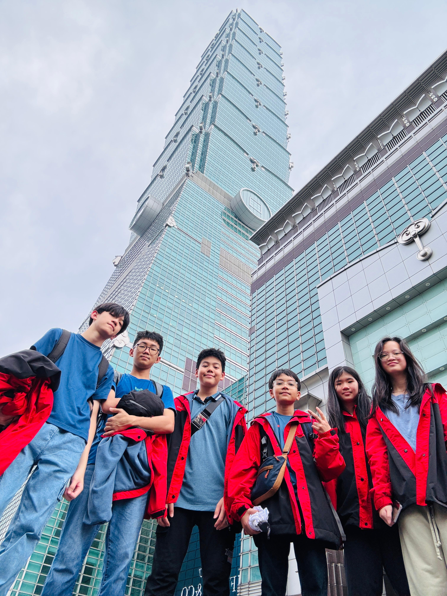

|  | Dalam Edutrip ini saya dan teman-teman serta guru-guru pendamping pergi ke Taiwan. Destinasi kota kami dibagi menjadi tiga yang terdiri dari Hualien, Keelung, dan Kaohsiung. Saya mendapat kelompok destinasi Kota Kaohsiung. Saya dan teman-teman satu kelompok saya merupakan siswa pertama yang pergi ke Kaohsiung. Selama Edutrip saya belajar banyak hal terutama cara untuk berperilaku di tempat yang baru. Saya sangat senang dapat mengikuti Edutrip yang diadakan sekolah. |